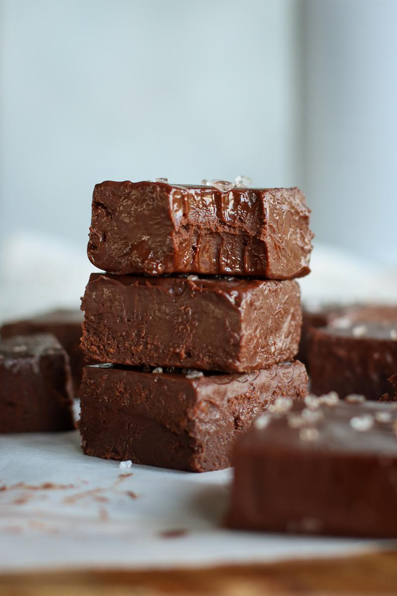

A delicious, creamy, melt-in-your-mouth chocolate fudge. It comes together with only 3 ingredients and can be stored for a few months in the freezer, so you'll have a sweet treat ready when you need it!
Ingredients
10.5 oz (300g) dairy-free dark chocolate, chopped
1/3 cups (320ml) sweetened condensed coconut milk
1 tsp (5ml) pure vanilla extract
Steps
Fill a saucepan with 2 cm of water, and bring to a gentle boil. Place a heat-safe bowl on top of the pan to create a 'double boiler'. Place the chocolate in the bowl and stir often. The heat from the bowl will melt the chocolate.
Once the chocolate has melted, turn off the heat and stir the condensed coconut milk and vanilla into the chocolate.
Line a 6 x 6 inch (16 x 16 cm) square baking dish with parchment paper and transfer the mixture to the dish. Sprinkle flaked sea salt on top if desired. Place in the freezer for at least 2 hours to harden.
To make cutting easier, try running your knife under hot water before cutting the fudge. Enjoy!